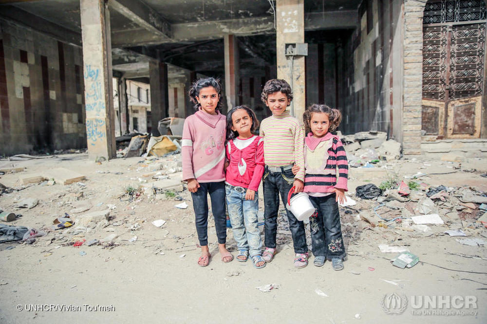
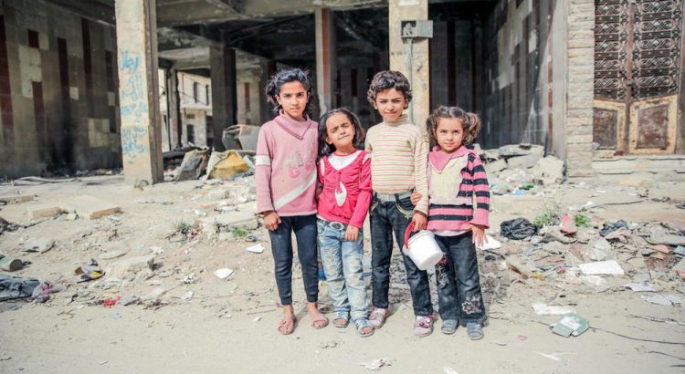

UN: Five Million Syrian Children Have Been Displaced

A new report by the UN Commission of Inquiry on Syria shows that armed militant groups in Syria are abusing children on a wide scale.Approximately 1.5 million children have been displaced inside Syria, and 3.7 million have fled the country.The United Nations Commission announced in its new report Thursday that there have been several violations against Syrian children since last year.The Commission’s report referred to cases of children being used in suicide bombings, using child soldiers for war and raping them.
Children with No Education
The report noted that more than 1.2 million girls and boys in Syria have been deprived of continuing education, and tens of thousands have lost their educational opportunities in recent years.Schools in Syria have been repeatedly targeted by pro-government forces.Some civil activists have reported that at least eight civilians were killed on January 1, as a result of a missile attack by Syrian government forces on a school in Idlib.
Karen Abu Zaid, a member of the UN Commission on the Issue, called for urgent action by the Syrian government to support the country, calling for re-education opportunities to allow children to return to the classroom.'Armed groups that have defined their territories and boundaries must also provide the necessary facilities for the education of children as soon as possible,' she added.
Syrian Children’s Suffering
The report focuses on the suffering and emotional trauma of children, and further describes the situation of children in situations such as 'assault, siege, torture, detention, and loss of normal life'.The commission, citing interviews with 5,000 Syrian children and adolescents, further stated in its report that 'many Syrian girls and boys face problems such as sleep disturbance, insecurity, having to leave the country, fear of revenge, despair, and fear.'
The Syrian crisis began after a number of Syrian liberals marched peacefully in March 2011.These demonstrations quickly became an all-out battle, and since then, Syria has been engulfed in total war.The presence of some of Syria’s neighbors in the middle, and the confrontation with foreign allies and internal opposition by the Syrian government, has made the country a source of much conflict.
The United Nations Office for Humanitarian Coordination (OCHA) said about 3,000 people, 5% of whom are women and children, have been displaced from the outskirts of Idlib as early as December, as the last stronghold in the Syrian war and near border areas.In 2018, 1,106 children were killed in Syria.The figure, released by the United Nations Children’s Fund (UNICEF), is the highest figure ever reported on child deaths during the devastating Syrian Civil War.UNICEF has emphasized that this figure only includes victims captured by the UN’s death records, and the actual figures may be much higher.
The United Nations Children’s Fund has warned of the critical situation of children in Syria ahead of the World Conference on Donating Assistance to Syria in Brussels.According to UNICEF, Syrian children’s education and health centers have been targeted and attacked five times over the past year, and hundreds of Syrian children have been killed or injured as a result of military attacks.The report also noted that children living alone or with a family member near the Jordanian border live in the camp with limited access to food, water, shelter, health care, and education.
[bsa_pro_ad_space id=4]
Share on Facebook Tweet Follow us
Posted On: 2020-01-17T00:00:00
Posted By: Benedict Kasigara




Content Date: 2020-01-17
Download Date: 2021-07-09
Document ID: L0C04EV2X